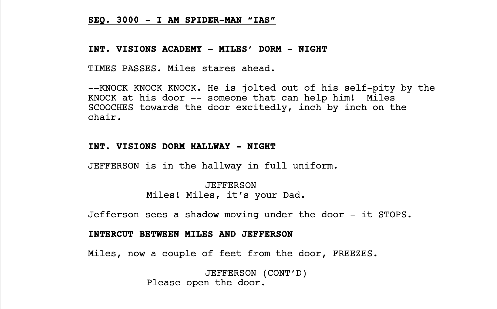
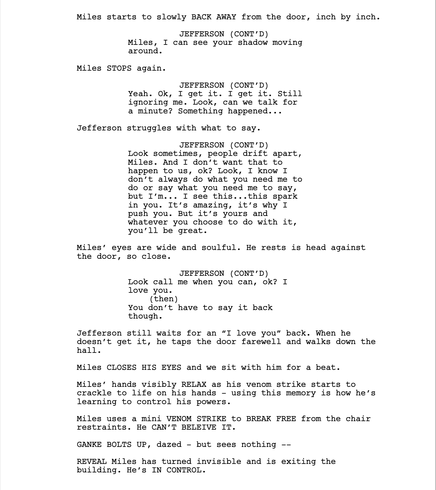
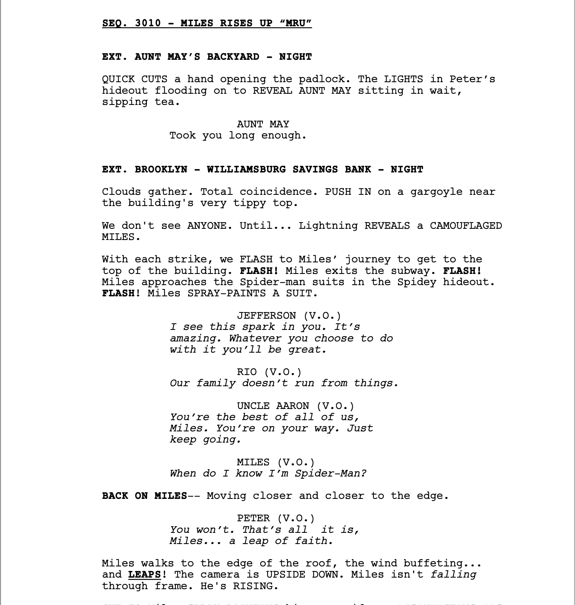

We’ve probably all heard the term “leap of faith” before. It’s defined as:
an act of believing in or attempting something whose existence or outcome cannot be proved.
Pretty simple, right? But what makes something a leap of faith and not a leap of a fool?
What even is a leap of a fool?
Let’s explore this through what will probably be, if not already, one of the most famous scenes in animation history.
That’s all it is, Miles. A leap of faith.
I know what you’re thinking. Seriously? You’re analyzing a scene from Spider-Man? Wasn’t a 20 page essay enough?
Hear me out. Or first, if you haven’t already, check this scene out. Spoilers below if you still haven’t watched Spider-Man: Into the Spider-Verse.
Miles Morales, the main character of the movie, is struggling with his new role as the Spider-Man of his dimension. After meeting multiple Spider-people from other dimensions, he’s left behind as the others go to stop his dimension from collapsing. He is not worthy of being Spider-Man yet, and can’t control his powers. But after a visit from his dad, who encourages Miles after the death of his uncle, Miles finally finds the strength and determination to save his dimension along with the other Spider-people.
Albeit very dramatically, Miles’ journey from a loss of faith to a leap of faith, through the empowerment of his father’s words, is shown beautifully through a mix of animation, dialogue, and music.
The screenwriters obviously had a lot of fun writing this segment. We can see their enthusiasm and the amount of detail that went into constructing the scene below:
  
The purpose of this scene is to show off cool animation show how with the love and encouragement of his parents, Miles is unstoppable and can do anything.
He takes a leap of faith, and goes to save his dimension from collapsing.
It’s a somewhat calculated move, but he doesn’t know what the outcome is going to be. He’s unsure of how he’ll make things better or worse. He understands the conequences.
But he’s empowered now, and ready to take a leap of faith.
Leap of a fool
We know what a leap of faith is now, and if we look at ourselves, we probably take minor ones all the time. But what’s a leap of a fool?
We make a lot of these ourselves too. We probably just call them mistakes. Actions that we took without properly assessing the consequences. Without knowing the risks.
A leap of faith understands the consequences of an action, but proceeds with the action anyways because they know it’s what’s right. A leap of a fool doesn’t understand the consequences, or understands the consequences but doesn’t take them seriously.
Whenever I make decisions and am not 100% sure whether or not to proceed with them, I try to think: am I taking a leap of faith or a leap of a fool?
Reaching out to managers of a podcast asking to edit for them is a leap of faith. Reaching out to managers of a podcast asking to edit for them without attaching a resume thinking that naming a few of your works is good enough is a leap of a fool.
Couldn’t be me.